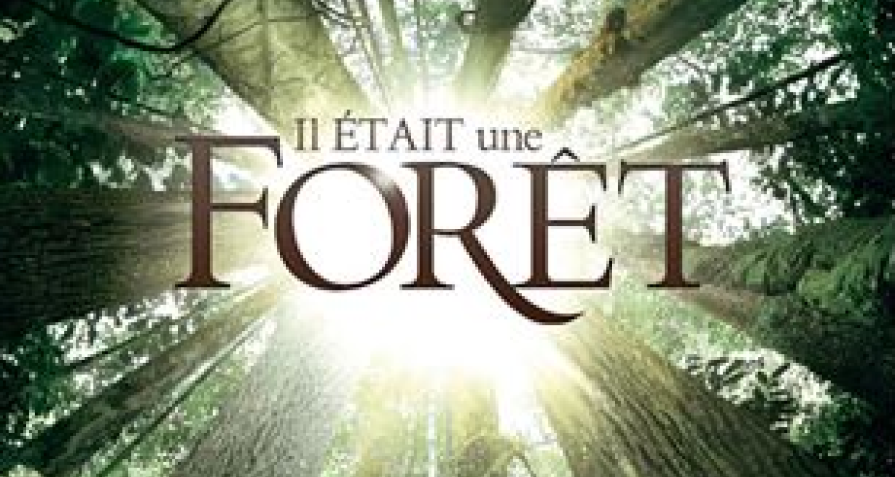

Il était une forêt [Livre]
Découvrez l'Émerveillement de la Nature à travers le livre
Explorez la magie de la forêt à travers le livre "Il était une forêt" de Francis Hallé. Plongez-vous dans une aventure fascinante à la découverte de la vie secrète de l'écosystème forestier, où chaque arbre est un protagoniste et chaque bruissement de feuille une ligne de dialogue. Ce livre est bien plus qu'un simple ouvrage, c'est une célébration poétique de la nature, une invitation à redécouvrir la splendeur de nos forêts et à les préserver.
Informations
| Type | livre |
| Écrivain | Luc Jaquet |
| Editeur | Actes sud |
| Genre | documentaire |
| Thème | nature |
| Nombre de page | 240 |
| Date de sortie | 16 novembre 2013 |
"Chaque arbre participe à la vie de la forêt. Une forêt, c'est vivant et on peut dire même que c'est plus vivant qu'un homme, parce qu'on sait que si on le coupe, il ne repousse pas"- Luc Jacquet
Synopsis
"Il était une forêt" est un ouvrage captivant écrit par le célèbre botaniste et explorateur français Francis Halle. Le livre nous transporte dans un voyage littéraire à travers les mystères et la beauté de la nature, en se concentrant principalement sur les forêts tropicales. Il offre un regard fascinant sur l'écosystème forestier, la faune et la flore qui le composent, tout en explorant les interactions complexes qui maintiennent l'équilibre de ces environnements uniques.
De quoi parle le livre ?
Ce livre se consacre à l'étude des forêts tropicales, l'un des écosystèmes les plus riches et diversifiés de la planète. Francis Halle nous invite à plonger dans la profondeur de ces forêts, à travers une exploration détaillée de leur structure, de leur biodiversité, et de leur rôle crucial dans la régulation du climat mondial. L'auteur dévoile également les mécanismes qui maintiennent l'harmonie de ces écosystèmes, mettant en lumière l'importance des interactions entre les plantes, les animaux, et les éléments naturels.
Ce voyage au cœur des forêts tropicales, décrit par Francis Halle, est sublimé par les illustrations et les photographies qui enrichissent le texte, offrant au lecteur un aperçu visuel des merveilles de la nature.
Sa création
Francis Halle, célèbre botaniste et écologue français, a consacré une grande partie de sa vie à l'étude des forêts tropicales. "Il était une forêt" est le résultat de ses années d'observations, de recherches et d'expéditions dans ces environnements extraordinaires. Le livre est le fruit de sa passion pour la nature et de son désir de partager sa connaissance avec le public.
Halle écrit avec une prose poétique qui reflète son amour pour la nature. Ses descriptions vivantes et ses anecdotes personnelles rendent la lecture accessible à tous, qu'ils soient amateurs de sciences ou simples amoureux de la nature.
Conclusion
"Il était une forêt" est bien plus qu'un simple ouvrage scientifique. Il s'agit d'un hymne à la nature, d'une exploration envoûtante des forêts tropicales et de la merveilleuse complexité de la vie qui les habite.
Francis Halle nous rappelle la beauté et la fragilité de ces écosystèmes cruciaux pour notre planète.
Ce livre est une invitation à la découverte, à la réflexion sur notre rôle dans la préservation de la biodiversité, et à l'appréciation de la magie de la nature.
Que vous soyez passionné de botanique, d'écologie ou tout simplement curieux de la beauté du monde naturel, "Il était une forêt" vous transportera dans un voyage inoubliable à travers les forêts tropicales, à la rencontre de la vie dans toute sa splendeur.